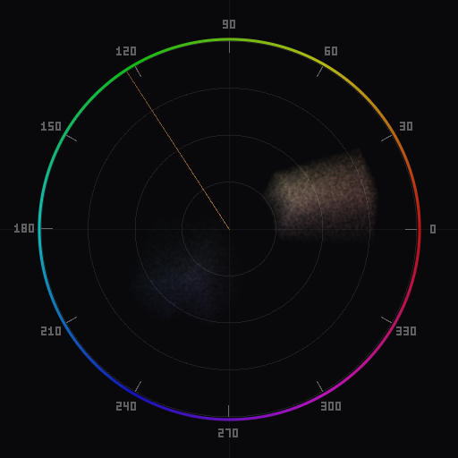

How to Use Chromascope in Lightroom Classic
Install the plugin, learn the controls, and start analyzing color in your photos -- all in about five minutes.

Lightroom Classic has histograms. It does not have a vectorscope. That means you can see how bright your pixels are, but you cannot see where they sit on the color wheel, how saturated they are relative to each other, or whether your skin tones fall on the correct hue axis. Chromascope adds that missing tool directly inside Lightroom as a plugin.
This guide covers the practical steps: installing the plugin, opening it, understanding what you see, and using it during real editing sessions. If you want the theory behind vectorscopes first, read What Is a Vectorscope? before continuing.
Installation
Download Chromascope and unzip it. Inside the archive you will find a folder named chromascope.lrdevplugin. This is the Lightroom plugin bundle.
To install it, open Lightroom Classic, go to File → Plug-in Manager, and click Add. Navigate to the chromascope.lrdevplugin folder and select it. Lightroom will load the plugin immediately. You do not need to restart.
The plugin includes a bundled binary that handles image decoding and vectorscope rendering. Lightroom's plugin sandbox does not allow direct pixel access from Lua, so Chromascope uses a native renderer to produce the vectorscope image. This binary is included for both macOS (Apple Silicon and Intel) and Windows. No additional dependencies are required.
Opening Chromascope
Once the plugin is installed, open it from File → Plug-in Extras → Chromascope. This opens a dialog window containing the vectorscope display and control panel.
The dialog works in the Develop module. Switch to Develop, select a photo, then open Chromascope. The vectorscope will render from the current state of your image, including any develop adjustments you have applied.
The vectorscope display
The main area of the Chromascope window is the vectorscope plot. It is a circular graph where the angle from center represents hue and the distance from center represents saturation. Pixels with no color (pure gray) appear at the center. Highly saturated pixels appear near the edge.
Around the perimeter you will see degree labels and color targets. The standard layout places red at the upper left, yellow at the upper right, green at the right, cyan at the lower right, blue at the lower left, and magenta at the left. If you are coming from video scopes, note that the exact positions depend on the color space -- Chromascope supports YCbCr, CIE LUV, and HSL, each of which arranges hues differently. YCbCr matches the traditional broadcast vectorscope layout. CIE LUV is perceptually uniform. HSL maps hue angle directly.
For most photography work, CIE LUV is the best starting point. Colors that look equally different to your eye are equally spaced on the plot, which makes it easier to judge color balance by the shape of the distribution rather than memorizing target positions. For a deeper explanation of reading vectorscope plots, see What Is a Vectorscope?
Density modes
Chromascope offers three density rendering modes: scatter, heatmap, and bloom. You can switch between them using the density control in the settings panel.
Scatter plots each sampled pixel as an individual dot with additive blending. Areas with many overlapping pixels appear brighter. This is the most literal representation of your data -- every pixel gets equal visual weight. Scatter is best for technical analysis where you need to see the exact distribution, including sparse outliers.
Heatmap maps pixel density to a color ramp, typically from dark to bright. Dense regions appear as hot colors. This is useful when you want to quickly identify the dominant color populations in your image.
Bloom adds a soft radial glow around each pixel, with overlapping glows blending additively. The result is a smooth, organic-looking plot that emphasizes where color mass is concentrated. Bloom is the best mode for getting a quick visual read on overall color balance.
For a detailed comparison of when to use each mode, see Scatter vs Bloom.
Harmony overlays
The harmony overlay draws a geometric guide on top of the vectorscope plot. Chromascope supports complementary, split-complementary, triadic, analogous, and square harmony schemes. You can rotate the overlay to align with any base hue.
The overlay is a compositional aid, not a rule. When you enable a complementary overlay, for example, you will see two zones 180 degrees apart on the scope. If your image's color distribution falls mostly within those two zones, the palette has a complementary relationship. If the distribution spills outside the zones, it does not -- and that may or may not be a problem, depending on your creative intent.
A practical use: enable the analogous overlay and rotate it to align with your subject's dominant color. If stray color populations fall well outside the analogous zone, those are candidates for targeted hue or saturation adjustments.
Real-time updates
Chromascope updates the vectorscope as you edit. When you move a slider in the Develop module -- white balance, HSL, tone curve, or any other adjustment -- the plugin detects the change and re-renders the scope. There is a short debounce to avoid overwhelming the system while you are dragging a slider. The update typically appears within a fraction of a second after you release.
This feedback loop is the core value of having a vectorscope inside your editor. Instead of making an adjustment, exporting, opening in another tool, and checking, you see the effect on color distribution immediately. You can drag the temperature slider and watch the color mass shift between warm and cool in real time.
The plugin also includes a skin tone reference line. When enabled, a line is drawn from the center of the scope at the expected skin tone hue angle. This is useful during portrait editing -- as you adjust white balance or HSL sliders, you can watch whether skin tones are drifting toward or away from the reference. For a full walkthrough of this workflow, see Skin Tone Correction.
Tips for daily use
Start with bloom, switch to scatter when needed. Bloom gives you the fastest read on overall color balance. Switch to scatter when you need to investigate specific outliers or see exactly how spread out a color cluster is.
Use CIE LUV for color grading. Because it is perceptually uniform, the visual distance between two points on the plot corresponds to the perceived color difference. This makes it easier to judge whether your color grade is balanced without constantly cross-referencing target positions.
Check before and after. Open Chromascope before you start editing to see the raw color distribution. As you work, the scope updates in real time. Comparing the starting shape to the current shape tells you exactly what your adjustments have done to the color palette.
Pair with HSL adjustments. The vectorscope shows you where colors are; the HSL panel lets you move them. Identify a problematic hue on the scope, then use HSL sliders to shift, desaturate, or darken it. The scope updates as you drag, so you get immediate confirmation.
For the full reference of every setting and control, see the Lightroom plugin documentation.